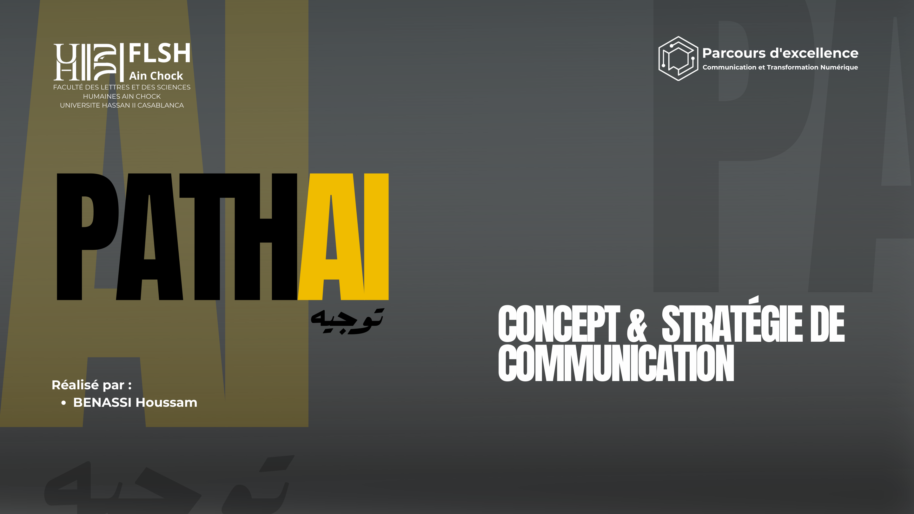

Site interactif · contenu fidèle au PDF · palette PathAI
PATHAI
CONCEPT & STRATÉGIE
DE COMMUNICATION
Ce site reprend le contenu du document : introduction, typologie des plateformes numériques, aspects techniques, stratégies de communication, création de contenu, analyse de performance, tendances, innovations, conclusion, limites et perspectives.
8
chapitres structurés comme le PDF
100%
contenu repris sans retirer les parties principales
UI
design interactif gris, vert, jaune et high-tech

Plateforme centrale
Site web et application PathAI comme cœur d’orientation.
Score d’engagement
Suivi par KPIs, analytics et tableaux de bord.
Core AI
NLP, IA prédictive, big data, recommandation hybride.
Communication
Instagram, TikTok, YouTube, LinkedIn, Facebook, WhatsApp.